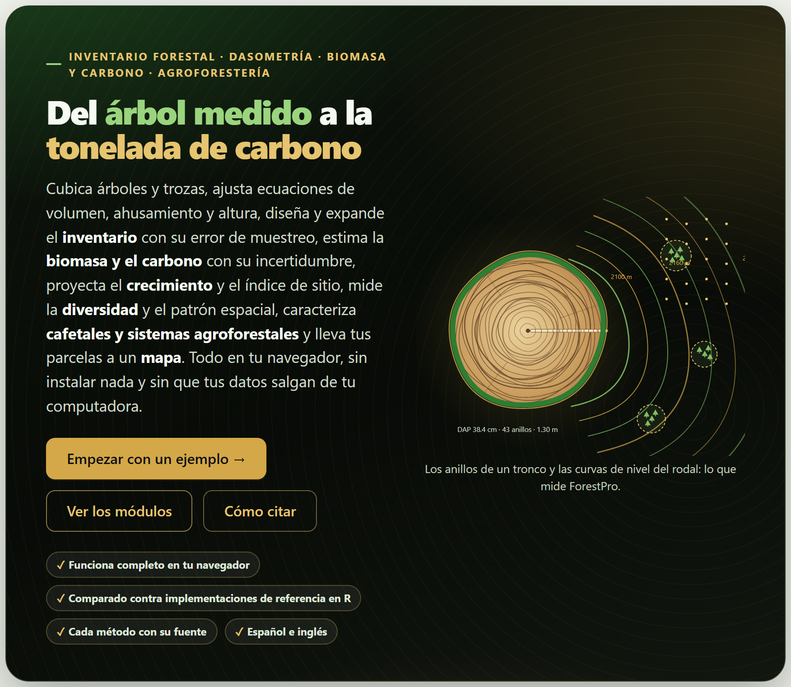
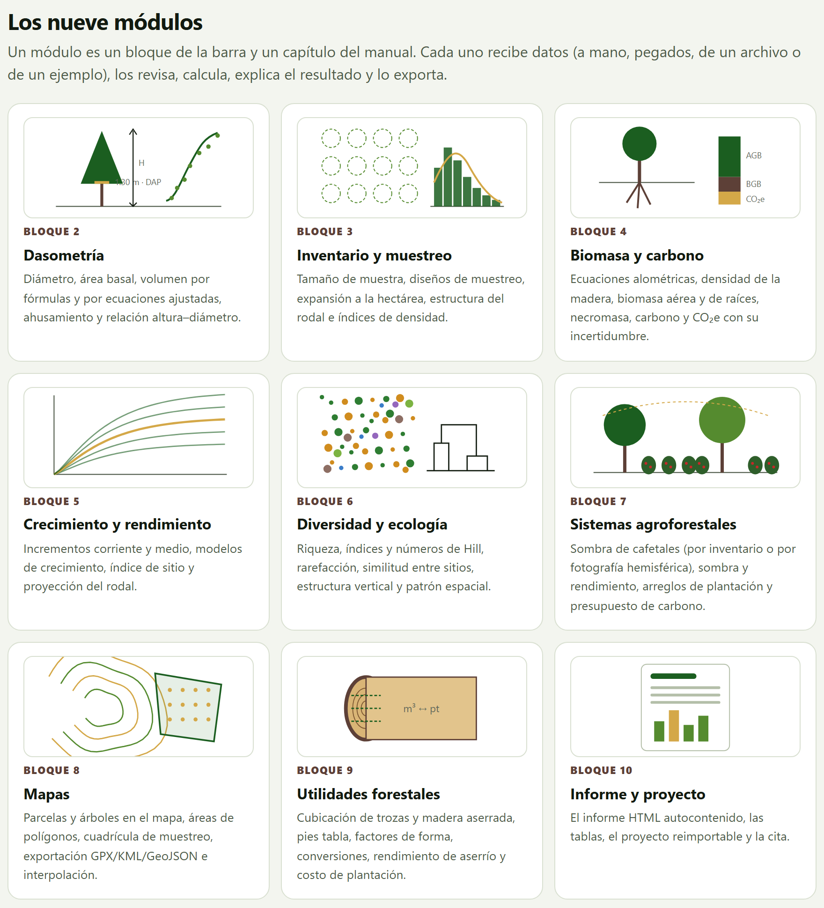
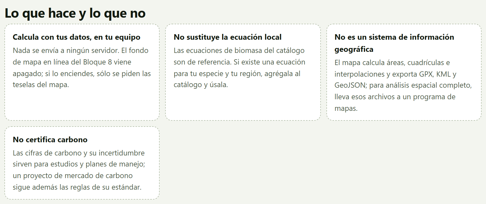
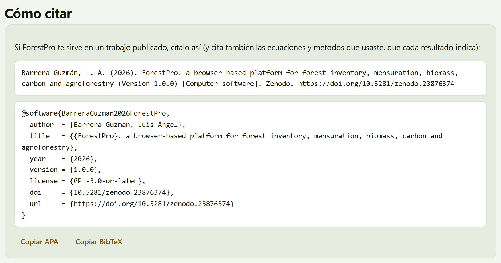

El Bloque 1 es la portada de la app. No calcula nada: dice qué hace ForestPro y qué no, resume en seis pasos el orden de un trabajo forestal, presenta los nueve módulos que siguen, abre los cuatro conjuntos de ejemplo en el bloque que les corresponde y da la cita del programa. Es el lugar al que se vuelve para empezar algo nuevo o para recordar dónde está cada cosa.
Al abrir index.html, la app arranca en el Bloque 1. A diferencia de los demás bloques, éste no tiene título numerado ni tarjetas: es una página de presentación que se recorre de arriba abajo, y la lista En este bloque de la derecha lleva a cada una de sus secciones.
Arriba está el héroe, un recuadro oscuro con el lema Del árbol medido a la tonelada de carbono, una línea con las cuatro materias de la app (Inventario forestal · dasometría · biomasa y carbono · agroforestería) y un párrafo que resume lo que hace. A la derecha, un dibujo propio: la sección de un tronco con sus anillos de crecimiento, rotulada DAP 38.4 cm · 43 anillos · 1.30 m, cuyos anillos exteriores salen del tronco y se vuelven las curvas de nivel de un mapa con parcelas de inventario. El pie del dibujo lo dice en una línea: Los anillos de un tronco y las curvas de nivel del rodal: lo que mide ForestPro.

1 2 3 4 5El botón Empezar con un ejemplo → hace lo mismo que el botón Abrir en Inventario de la tarjeta del cafetal en Datos de ejemplo (sección 1.4). Los otros dos sólo desplazan la página; si en la configuración de tu sistema pediste reducir el movimiento, el salto es inmediato en lugar de suave.
Cargar un ejemplo o tus propios datos no cambia nada en el Bloque 1; la palomita de la barra de bloques marca, en cambio, los bloques que ya tienen un resultado. El nombre ForestPro de la barra superior siempre regresa aquí.
La primera sección debajo del héroe resume el orden de un trabajo forestal en seis recuadros, cada uno con su número de paso, su nombre y lo que entra en él. El subtítulo lo explica: El orden es el de un trabajo forestal: medir los árboles, muestrear el rodal, expandir a la hectárea, convertir en biomasa y carbono, proyectar y reportar. La figura I.7 de la introducción muestra esta sección.
| Paso | Lo que dice la app | Dónde se hace |
|---|---|---|
| Medir | DAP, alturas, secciones | 2 Dasometría individual; 9 cubicación de trozas |
| Muestrear | diseño y tamaño de muestra | 3 el inventario, el tamaño de muestra; 8 la cuadrícula de muestreo |
| Expandir | a la hectárea y al rodal | 3 la expansión, la estimación con su error y la estructura del rodal |
| Convertir | biomasa, carbono, CO₂e | 4 Biomasa y carbono; 7 el carbono de un sistema agroforestal |
| Proyectar | crecimiento e índice de sitio | 5 Crecimiento y rendimiento |
| Reportar | informe, tablas y mapas | 10 Informe y proyecto; 8 los mapas |
La segunda mitad del subtítulo es igual de importante: Los módulos también se usan sueltos: cada uno acepta su propia tabla. Nada obliga a pasar por el Bloque 3 para cubicar trozas en el 9 o para ajustar una curva de crecimiento en el 5. El orden sirve para no olvidar pasos, no para imponerlos; la sección I.8 de la introducción lo recorre con más detalle.
La sección Los nueve módulos tiene una tarjeta por cada bloque del 2 al 10, con una viñeta dibujada para ese bloque, su número, su nombre y la misma línea que la app pone debajo del título del bloque. Un clic en cualquier parte de la tarjeta abre el bloque. Como dice su subtítulo, Un módulo es un bloque de la barra y un capítulo del manual. La tarjeta del Bloque 2 corresponde al capítulo 2 de este manual, la del 3 al capítulo 3, y así hasta el 10.

Las viñetas también son dibujos propios hechos por código, como la sección del tronco del héroe, y salen en el idioma de la interfaz. Los nombres cortos de las tarjetas son los mismos de la barra de bloques (Dasometría, Inventario y muestreo, …); el título completo de cada bloque es el que lleva su capítulo en este manual (Dasometría individual, Inventario forestal y muestreo, …).
La sección Datos de ejemplo tiene cuatro tarjetas, una por conjunto, con su nombre, una línea de cifras, una descripción y un botón Abrir en … por cada bloque en que se usa (figura I.6 de la introducción). Su subtítulo advierte que son simulados, con órdenes de magnitud realistas, que no son mediciones de un sitio real y que el guion que los genera está en data/generar_datos.R.
| Tarjeta | Botón | Qué abre y qué carga |
|---|---|---|
| Cafetal bajo sombra 25 parcelas · 1 000 m² · café y árboles de sombra | Abrir en Inventario | Bloque 3 con los 719 árboles de sombra y las 25 parcelas (capítulo 3) |
| Abrir en Biomasa | Bloque 4 con el cafetal; carga también su inventario en el Bloque 3 | |
| Abrir en Agroforestería | Bloque 7: carga el inventario del cafetal en el Bloque 3 y llena la sombra, la foto de ejemplo, el rendimiento y el presupuesto de carbono | |
| Bosque mesófilo estratificado 3 estratos · 24 parcelas · parcela mapeada de 50 × 50 m | Abrir en Inventario | Bloque 3 con los 1 830 árboles y las 24 parcelas anidadas (capítulo 3) |
| Abrir en Diversidad | Bloque 6 con la comunidad y la parcela mapeada de 50 × 50 m | |
| Abrir en Mapas | Bloque 8 con las parcelas del mesófilo (cargadas también en el Bloque 3) y el predio de 9 vértices | |
| Plantación de pino 30 parcelas permanentes · 6 remediciones · árboles derribados | Abrir en Dasometría | Bloque 2 con las 536 secciones de los 40 árboles derribados (capítulo 2) |
| Abrir en Crecimiento | Bloque 5 con el análisis troncal y las remediciones | |
| Abrir en Utilidades | Bloque 9 con las 12 trozas de pino, la plantación a 25 años y el rendimiento de aserrío | |
| Densidades y ecuaciones densidad básica de la madera · catálogo alométrico | Abrir en Biomasa | Bloque 4, a la altura de la tabla de densidades; no carga nada nuevo, porque la tabla y el catálogo ya vienen en el bloque |
Cada botón hace dos cosas: abre el bloque y carga el ejemplo en sus tarjetas de datos, reemplazando lo que hubiera. Cada tarjeta de datos tiene además su propia lista de ejemplos, de modo que puedes cargar, por ejemplo, los árboles del mesófilo en Bloque 2›Árboles en pie aunque la portada no tenga un botón para eso. Los conjuntos, lo que traen y para qué sirve cada uno están descritos en la sección I.7.
Abrir un ejemplo sustituye los datos de las tarjetas que llena. Si ya cargaste tu propio inventario, guarda antes el proyecto (Bloque 10›Proyecto) para poder volver a él.
Cuatro recuadros dicen de frente qué se puede esperar del programa. El primero es una promesa; los otros tres, límites.

La sección I.10 de la introducción agrega dos límites que no están en la portada: el programa no planea el muestreo por ti y no trabaja con modelos árbol por árbol ni con teledetección.
La última sección da la cita del programa en dos formatos, uno debajo del otro: la referencia en estilo APA y la entrada de BibTeX (con la clave BarreraGuzman2026ForestPro, la versión 1.0.0, la licencia GPL-3.0-or-later y el DOI). Los botones Copiar APA y Copiar BibTeX la copian al portapapeles, y un aviso breve confirma Copiado. El texto que la acompaña recuerda lo que también hay que citar: las ecuaciones y métodos que usaste, que cada resultado indica, en su recuadro Método y fuentes.

La misma cita está en Bloque 10›Cómo citar, que además descarga el archivo forestpro.bib, y al final de todos los informes. La cita lleva el DOI de concepto de Zenodo, 10.5281/zenodo.23876374, que lleva siempre a la versión más reciente; el código está en https://github.com/luisangelbg/ForestPro.
Debajo de la cita hay tres enlaces, que se abren en una pestaña nueva:
| Enlace | Qué abre |
|---|---|
| Manual de usuario (en español) | Este manual, en manual/es/manual-completo.html. En la interfaz inglesa el enlace dice que el manual está en español |
| Pruebas | tests/run.html, que corre en el navegador las 84 pruebas automáticas de la app: valores de libro, formas cerradas y casos límite. Todas deben salir en verde |
| Validación contra implementaciones independientes | tests/VALIDACION.md, el resumen de las 8 327 comparaciones de los bloques 2 a 9 contra implementaciones de referencia independientes, sin desacuerdos (sección I.9) |
Una última línea dice que ForestPro es software libre (GPL-3.0) de la suite y que está hecho con código propio, sin bibliotecas de terceros.
| Si es la primera vez que abres la app | entonces pulsa Empezar con un ejemplo → y recorre el capítulo 3 con el cafetal de ejemplo. |
| Si tienes un inventario de parcelas | entonces ve directo al Bloque 3, carga tus árboles y tus parcelas y sigue con el 4 si quieres el carbono. |
| Si sólo tienes árboles derribados, trozas o una plantación que evaluar | entonces los bloques 2 y 9 trabajan solos, con su propia tabla. |
| Si vas a publicar los resultados | entonces copia la cita desde aquí o desde el Bloque 10 y cita también los métodos de cada resultado. |
Son guías para orientarse, no un orden obligatorio.
Un botón Abrir en … lleva al bloque, pero no veo datos. El ejemplo se carga en las tarjetas de datos de ese bloque, que pueden estar más abajo; usa la lista En este bloque o Ctrl + K. Los botones de copiar no hacen nada. Algunos navegadores no dejan usar el portapapeles en páginas abiertas como archivo local; selecciona el texto de la cita y cópialo a mano, o abre la app con Open ForestPro.bat (sección I.5). El enlace a las pruebas o a la validación no abre. Esos archivos están en la carpeta tests/ del programa; si copiaste sólo index.html y las carpetas js y css, faltan.